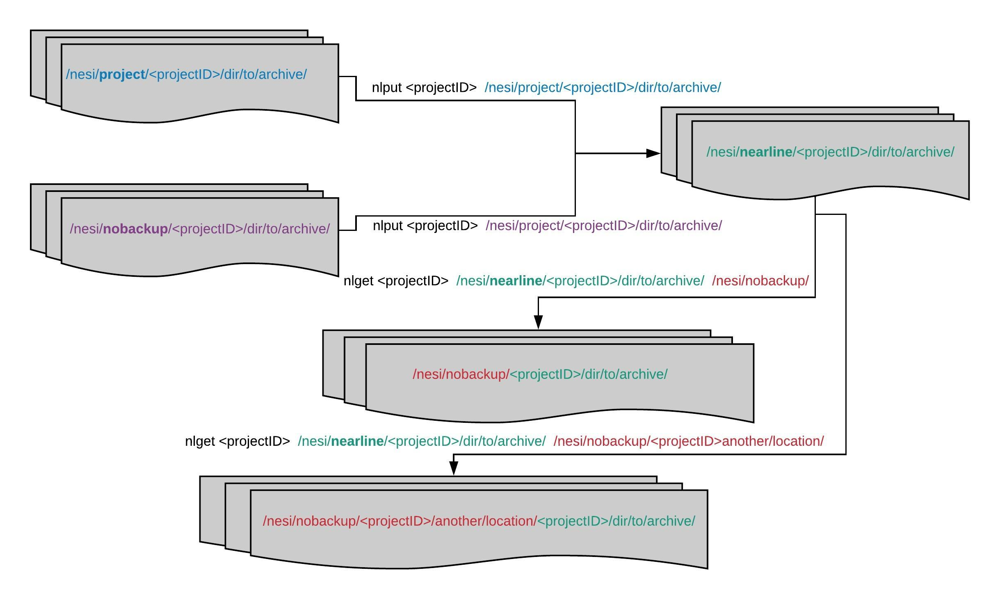

Nearline Long-Term Storage Service
Warning
This page has been automatically migrated and may contain formatting errors.
Nearline Nearline Nearline Nearline Nearline Nearline Nearline Nearline Nearline Nearline Nearline Nearline Nearline Nearline Nearline Nearline Nearline Nearline Nearline Nearline Nearline Nearline Nearline Nearline Nearline Nearline Nearline Nearline Nearline Nearline Nearline Nearline Nearline Nearline Nearline Nearline
Viewing files in nearline¶
With the following command, you can print the list of files and directories within the specified Nearline directory:
nlls /nesi/nearline/<projectID>
Similar to the shell command ls you can list subdirectories as well:
nlls /nesi/nearline/<projectID>/results/
Furthermore, you can use the additional option -l to get the detailed
list including mode, owner, group, filesize, and timestamp.
The option -s, an alternative to -l, will additionally show each
file's migration status. Note that, due to technical limitations, -s
does not work on single files and so nlls -s requires a directory as
its argument.
$ nlls -s /nesi/nearline/nesi12345/results/
mode s owner group filesize timestamp filename
___________________________________________________________________________________________________________________________
-rw-rw----+ r userName nesi12345 33.93 MB Jun 17 file1.tar.gz
-rw-rw----+ r userName nesi12345 33.93 MB Jun 17 file2.tar.gz
-rw-rw----+ r userName nesi12345 34.03 MB Jun 17 file3.tar.gz
Status ("s" column of the -s output) legend:
- migrated (m) - data of a specific Nearline file is on tape (does not necessarily mean that the file is replicated across sites)
- pre-migrated (p) - data of a specific Nearline file is on both the staging filesystem and the tape.
- resident (r) - data of a specific Nearline file is only on the staging filesystem.
BUG WARNING: The -l and -sflags may fail if the nearline
directory has a large amount of files. You will receive a long Python
stack trace if this occurs.
Traversing files within nearline¶
If you want to see all the files within a Nearline directory and its
subdirectories, you can run nltraverse.
nltraverse /nesi/nearline/<projectID>
Optionally, you can run nltraverse with the -s command-line switch,
which, as with nlls, will display the migration status of each file
found.
BUG WARNING: The-sflag may fail if a nearline directory has a
large amount of files. You will receive a long Python stack trace if
this occurs.
Comparing files in nearline to those on disk¶
If you want to compare a local (online storage) directory to a directory
on Nearline, you can use the nlcompare command. The syntax of this
command is:
nlcompare <local_directory> <nearline_directory>
This command will print out the lists of files giving their last modified times, sizes and file paths.
nlcompare is particularly useful if you want to compare a directory on
Nearline to a corresponding directory in /nesi/project or
/nesi/nobackup. See Verifying uploads to Nearline
storage for
more information on how to do a comparison and verification.
If the contents of the Nearline directory and the corresponding local
directory differ, the lists will be kept, and can be compared using any
text file comparison program, such as diff or vimdiff.
Putting/Ingesting files into nearline¶
Data can be copied to Nearline using the nlput command. The syntax is:
nlput [ --nowait ] <projectID> { <src_dir> | <file_list> }
The source directory or file list needs to be located under
/nesi/project/ or /nesi/nobackup/and specified as
such.
Prerequisite
The following will not work:
cd /nesi/project/nesi12345
nlput nesi12345 some_directory
nlput nesi12345 /nesi/project/nesi12345/some_directory
The data will be mapped into the same directory structure under
/nesi/nearline/ (see below).
Prerequisite
Please ensure your file or directory names do not contain spaces, non-standard characters or symbols. This may cause issues when uploading or downloading files.
The recommended file size to archive is between 1 GB and 1 TB. The client will not accept any directory or file list containing any file smaller than 64 MB or larger than 1 TB.
The Nearline client also checks file and directory permissions.
Specifically, before uploading a directory or the contents of a file
list, nlput will check the following, and will reject any directory or
file list that does not satisfy all these criteria:
- Every file must be readable by you, the operator.
- Every file must be readable and writable by its owner.
- Every file must be readable and writable by its group.
- The POSIX group of every file must be the project selected for upload.
If you are uploading a directory rather than the contents of a file list, the following additional permission restrictions apply:
- Every subdirectory must be readable, writable and executable by its owner.
- Every subdirectory must be readable, writable and executable by its group.
- The POSIX group of every subdirectory must be the project selected for upload.
The existing directory structure starting after
/nesi/project/<projectID>/ or /nesi/nobackup/<projectID>/ will be
mapped onto /nesi/nearline/<projectID>/
Prerequisite
Files and directories are checked for existence and only new files are transferred to Nearline. Files already on Nearline will not be updated to reflect newer source files. Thus, files that already exist on Nearline (either tape or staging disk) will be skipped in the migration process, though you should receive a notification of this If you wish to replace an existing file at a specific file path (instead of creating a copy at a different file path) then the original copy on Nearline must be purged.
nlput takes only a directory or a file list. A single file is
treated as a file list and read line by line, searching for valid file
names. Single files can only be migrated using a file list containing
the full path of the file to be transferred.
Put - directory¶
Prerequisite
If you try to upload to Nearline a path containing spaces, especially
multiple consecutive spaces, you will get some very unexpected
results, such as the job being dropped. We are aware of the issue and
may introduce a fix in a future release. In the meantime, we suggest
avoiding supplying such arguments to nlput. You can work around it
by renaming the directory and all its ancestors to avoid spaces, or by
putting the directory (or its ancestor whose name contains a space)
into an archive file.
This problem does not affect when your directory to upload happens to
have contents (files or directories) with spaces in their names, i.e.
to cause a problem the space must be in the name of the directory to
be uploaded or one of its ancestor directories.
All files and subdirectories within a specified directory will be transferred into Nearline. The target location maps with the source location. As an example:
nlput nesi12345 /nesi/nobackup/nesi12345/To/Archive/Results/
will copy all data within the Results directory into
/nesi/nearline/nesi12345/To/Archive/Results/.
Prerequisite
If you put /nesi/project/nesi12345/To/Archive/Results/ on
Nearline as well as
/nesi/nobackup/nesi12345/To/Archive/Results/, the contents
of both source locations (project and nobackup) will be merged
into /nesi/nearline/nesi12345/To/Archive/Results/. Within
/nesi/nearline/nesi12345/, files with the same name and path will be
skipped.
Put - file list¶
Prerequisite
The file list must be located within /nesi/project or
/nesi/nobackup. Any other location will cause obscure errors and
failures.
The file_list is a file containing a list of files to be transferred.
It can specify only one file per line and directories are
ignored.
The target location will again map with the source location, see above.
Update¶
As a good practice:
- migrate only large files (SquashFS archives, tarballs, or files that are individually large), or directories containing exclusively large files.
- Do not try to modify a file in the source (nobackup or project) directory once there is a copy of it on Nearline.
- Before deleting any data from your project or nobackup directory that has been uploaded to Nearline, please consider whether you require verification of the transfer. We recommend that you do at least a basic verification of all transfers.
If you need to update data on the Nearline file system with a newer version of data from nobackup or project:
- Compare the contents of the source directory
(on
/nesi/projector/nesi/nobackup) and the target directory (on/nesi/nearline). To look at one directory on/nesi/nearlineat a time, usenlls; if you need to compare a large number of files across a range of directories, or for more thorough verification (e.g. checksums), read this article or contact our support team. - Once you know which files you need to update (i.e. only files whose
Nearline version is out of date), remove the old files on Nearline
using
nlpurge. - Copy the updated files to the Nearline file system using
nlput.
Prerequisite
For technical reasons, files (data and metadata) and directory structures on Nearline cannot be safely changed once present, even by the system administrators, except by deletion and recreation. If you wish to rename your files or restructure your directories, you must follow the process below.
If you need to edit data, rename files, or restructure directories that exist on Nearline but are no longer on project or nobackup:
- Retrieve the files and directories you wish to change using the
nlgetcommand (see below). - Make the changes you wish to make.
- Follow the instructions above for updating data on Nearline with a new version of the data from project or nobackup.
Getting/Retrieving files from nearline¶
Data can be retrieved from Nearline using then nlget command. The
syntax is:
nlget [ --nowait ] <projectID> { <src_dir> | <file_list> } <dest_dir>
Similar to nlput (see above), nlget accepts a Nearline directory
src_dir (no single files on Nearline accepted) or a local file
list file_list, defining the source of the data to be retrieved from
Nearline.
Prerequisite
- The local file list must be located within
/nesi/projector/nesi/nobackup. Any other location will be rejected. - Paths to files or directories to be retrieved must be absolute and
start with
/nesi/nearline, whether supplied on the command line (as a directory) or as entries in a file list. - Directories whose names contain spaces, especially multiple
consecutive spaces, cannot be retrieved from Nearline directly
using
nlget. You must retrieve the contents of such a directory using a filelist, or retrieve one of its ancestors that doesn't have a space in the name or path. That is, instead of retrieving/nesi/project/nesi12345/ab/c ddirectly, retrieve/nesi/project/nesi12345/ab. We are aware of the problem and may address it in a later Nearline release.
The destination dest_dir needs to be defined. The whole directory
structure after /nesi/nearline/ will be created at the destination and
the specified data written into it. For example,
nlget nesi00000 /nesi/nearline/nesi00000/dir/to/results/ /nesi/nobackup/nesi00000
will create the directory structure
/nesi/nobackup/nesi00000/nesi00000/dir/to/results/ if that
directory structure does not already exist, and copy the data within the
Results directory into it. Note that the output pathe will include
the project root in the path.
Prerequisite
Any given file will not be retrieved if a file of the same name already exists in the destination directory. If you wish to retrieve a new copy of a file that already exists at the destination directory then you must either change the destination directory, or delete the existing copy of the file in the that directory.
nlget takes only one directory or one file list. Single files, if
local, are treated as a file list and read line by line, searching for
valid file names. A single Nearline file can only be retrieved using a
local file list specifying the full path of the file to be retrieved.
Purging/Removing files from nearline¶
The nlpurge command deletes specified data on the Nearline file system
permanently. The syntax is
nlpurge [--nowait] <src_dir>
nlpurge [ --nowait ] <projectID> { <src_dir> | <file_list> }
A directory src_dir already on Nearline (no single files
accepted) or a file list file_list needs to be specified (see
nlput above).
If the thing to be deleted is a directory, the project code is optional. If you are instead deleting the entries of a file list, the project code is compulsory, and moreover all entries in the file list must denote files within (or supposed to be within) the chosen project's Nearline directory.
Prerequisite
- If a file list is used, it must be located within
/nesi/projector/nesi/nobackupand referred to by its full path starting with one of those places (symlinks in the path are OK). - Paths to files or directories to be purged must be absolute and
start with
/nesi/nearline, whether supplied on the command line (as a directory) or as entries in a file list. - Purging the entire Nearline directory for a project, e.g.
nlpurge /nesi/nearline/nesi12345, is not permitted. To empty a project's Nearline directory, you must purge its contents one by one (if directories), or by means of a filelist (if files).
View nearline job status¶
The tool nljobstatus provides current status of submitted (queued,
running and completed) tasks. The syntax is:
nljobstatus [ <jobid> ]
If no job ID is specified the full list of your successfully submitted and accepted jobs is returned. In this list, each job looks like the following:
$ nljobstatus
+----------+------------+----------------------------+-----------+-------------+
| Jobid | Project ID | Job Status | Job Host | Job User |
+----------+------------+----------------------------+-----------+-------------+
| 4e23f517 | 13 | job done successfully | librarian | userName |
| -dfef-40 | | | | |
| e9-a83c- | | | | |
| 3da78b06 | | | | |
| 0310 | | | | |
+----------+------------+----------------------------+-----------+-------------+
With a job identifier jobid, information for a specific job can be
listed:
$ nljobstatus 4e23f517-dfef-40e9-a83c-3da78b060310
+--------------------------------------+
| Jobid |
+--------------------------------------+
| 4e23f517-dfef-40e9-a83c-3da78b060310 |
+--------------------------------------+
+------------+-----------------------+-----------+-------------+
| Project ID | Job Status | Job Host | Job User |
+------------+-----------------------+-----------+-------------+
| 13 | job done successfully | librarian | userName |
+------------+-----------------------+-----------+-------------+
+---------------------+---------------------+---------------------+
| Job Start Time | Job Update Time | Job End Time |
+---------------------+---------------------+---------------------+
| 2019-09-13T03:11:22 | 2019-09-13T03:11:44 | 2019-09-13T03:11:45 |
+---------------------+---------------------+---------------------+
If an nlput or nlpurge is running in that project, the project is
locked until the task is finished.
If a job stays in one state for an unexpectedly long time, please contact NeSI Support.
View nearline quota¶
With the command nlquotalist, the usage and limits of a Nearline
project quota can be listed:
The output looks like:
$ nlquotalist nesi12345
Projectname Available Used Inodes IUsed
___________________________________________________________________________________________________________________________
nesi12345 30.00 TB 27.16 TB 1000000 412
This quota is different from the project quota on GPFS
(/nesi/project/<projectID>).
Data management¶
In case you have the same directory structure on your project and nobackup directories, be careful when archiving data from both. They will be merged in the Nearline file system. Further, when retrieving data from Nearline, keep in mind that the directory structure up to your projectID will be retrieved:

Underlying mechanism¶
The Nearline file system consists of two parts: Disk, mainly for buffering data, and the tape library. It consists of a client running on the login/compute node and the backend on the Nearline file system. It is important to know that even if you cancel a client process, the corresponding backend process remains scheduled or running until finished.
The process of what data goes into tape and when is automated, and is not something you will have control over. The service is designed to optimise interaction with the Nearline filesystem and avoid problem workloads for the benefit of all users.
If your files are on tape, it will take time to retrieve them. Access to tape readers is on a first come first served basis, and the amount of wait time will vary dramatically depending on overall usage. We cannot guarantee access to your files within any particular timeframe, and indeed wait times could be hours or even in some cases more than a day.
Known issues¶
Prerequisite
Some users of Nearline have reported that attempts to retrieve files
from tape using nlget (see below) will not retrieve all files.
Instead, only some files will come back, and the job will finish with
the following output:
recall failed some syncs might still run (042)
Support contact¶
Please send feedback about your user experience at https://support.nesi.org.nz/hc/requests/new, which may include functionality issues, intuitive or counter-intuitive behaviours, behaviours or features that you like, suggestions for improvements, transfers taking too long, etc.
We welcome feedback from our users.
Created: July 21, 2021